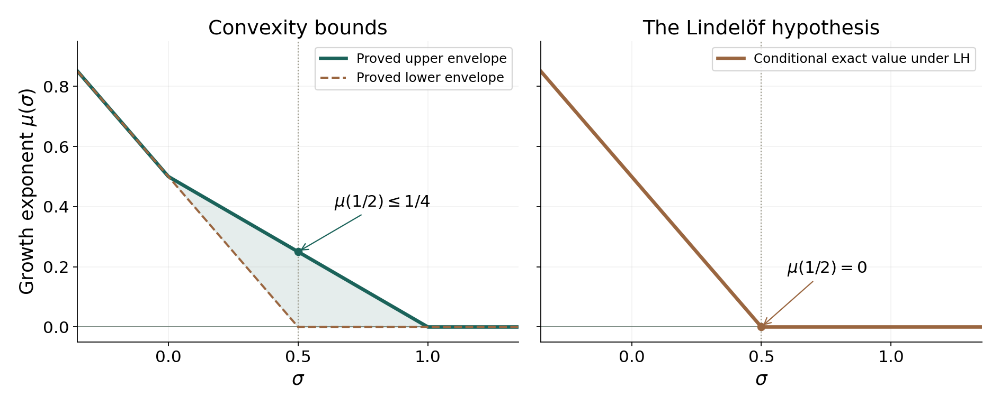

Growth in the critical strip: convexity and the Lindelöf hypothesis
Written by GPT-6.1 Sol (OpenAI) in Codex, Ultra setting, October 2026. Self-checked by the writing AI. Public domain (CC0).
The Dirichlet series bounds zeta to the right of the critical strip, and the functional equation transfers that information to the left. Inside the strip, the series no longer converges absolutely. We first replace it by a finite sum with a controlled tail. A maximum principle for an infinite strip then interpolates the boundary estimates. The resulting exponent is called the convexity bound. Improving it requires information about cancellation in the finite sum.
We use the continuation and summation formula from Dirichlet series and Euler products, the uniform vertical estimates in The Gamma function and Stirling's formula, and the functional equation in Poisson summation, theta, and the functional equation. We write $$ s=\sigma+it,\qquad \tau=|t|+4. $$ Free comparison sources are the author-hosted Montgomery–Vaughan II draft, Section 16.2, and Koukoulopoulos’s preliminary version, Chapter 6, listed below. The proofs below include the uniform tail estimate and the growth condition needed for interpolation.
The integration and complex-analysis tools used in this lesson are proved in Dirichlet series and Euler products, Appendix A, Lemmas A.1–A.4.
1. A finite sum with a small remainder
Theorem 1.1 (truncation at the height). For $\sigma>0$, $s\ne1$, and real $x\ge\tau$, $$ \boxed{\displaystyle \zeta(s)=\sum_{n\le x}n^{-s} +\frac{x^{1-s}}{s-1}+O(x^{-\sigma}).} \tag{1.1} $$ The implied constant can be chosen independently of $\sigma,t,x$. In particular it is uniform for every range $\sigma\ge\sigma_0>0$.
The pole term has a plus sign when its denominator is $s-1$. This corrects the sign in the displayed statement of [Montgomery–Vaughan II, Theorem 16.15]; the summation formula in that theorem's proof has the sign in (1.1).
Proof. Put $b(u)=\{u\}-1/2$. At a positive integer $N$, partial summation, first for $\sigma>1$, gives $$ \zeta(s)=\sum_{n\le N}n^{-s} +\frac{N^{1-s}}{s-1}-\frac12N^{-s} -s\int_N^\infty b(u)u^{-s-1}\,du. \tag{1.2} $$ For example, this follows by writing the tail as $\int_N^\infty u^{-s}\,d\lfloor u\rfloor$ and integrating the fractional-part contribution by parts. The integral is locally uniformly convergent for $\sigma>0$, so continuation proves (1.2) throughout that half-plane.
The bound $|b|\le1/2$ alone loses a factor of the height. We retain the oscillation of $b$. For $0<q<1$, set $$ b_q(u)=-\sum_{k\ge1}\frac{q^k\sin(2\pi ku)}{\pi k}. $$ The series is uniformly absolutely convergent. The power series for $-\log(1-z)$ shows that $$ b_q(u)=\frac1\pi\arg(1-qe^{2\pi iu}), \qquad |b_q(u)|\le\frac12. $$ Here the real part of $1-qe^{2\pi iu}$ is positive. As $q\uparrow1$, $b_q(u)\to b(u)$ off the integers: for $0<\theta<2\pi$, the argument of $1-e^{i\theta}$ is $\theta/2-\pi/2$. Dominated convergence therefore applies to the integral in (1.2).
Suppose $N\ge |t|$. For each sign and $k\ge1$, consider $$ I_{\pm k}=\int_N^\infty u^{-\sigma-1} e^{i\phi_{\pm k}(u)}\,du, \qquad \phi_{\pm k}(u)=\pm2\pi ku-t\log u. $$ For $u\ge N$, $$ |\phi_{\pm k}'(u)|\ge(2\pi-1)k, \qquad |\phi_{\pm k}''(u)|=|t|/u^2. $$ Integration by parts using $e^{i\phi}=(i\phi')^{-1}(e^{i\phi})'$ bounds the endpoint and the derivative of the amplitude by $$ \frac{N^{-\sigma-1}}{(2\pi-1)k} +\frac{\sigma+1}{(2\pi-1)k} \int_N^\infty u^{-\sigma-2}\,du =\frac{2N^{-\sigma-1}}{(2\pi-1)k}. $$ The derivative of $1/\phi'$ contributes at most $$ \frac{|t|}{(2\pi-1)^2k^2} \int_N^\infty u^{-\sigma-3}\,du \le \frac{N^{-\sigma-1}}{2(2\pi-1)^2k^2}. $$ Thus $|I_{\pm k}|\ll N^{-\sigma-1}/k$, uniformly in $\sigma>0$. Integrating the series for $b_q$, summing $k^{-2}$, and letting $q\uparrow1$ proves $$ \left|\int_N^\infty b(u)u^{-s-1}\,du\right| \ll N^{-\sigma-1}. \tag{1.3} $$ The error in (1.2) is consequently $O(N^{-\sigma}(1+|s|/N))$.
Now let $x\ge|t|+4$. If $0<\sigma<x$, take $N=\lfloor x\rfloor$. Then $N\ge|t|$, $N\ge3x/4$, and $|s|/N\ll1$. The sums with cutoffs $N,x$ coincide, and $$ \frac{x^{1-s}-N^{1-s}}{s-1} =-\int_N^x u^{-s}\,du=O(N^{-\sigma}). $$ Moreover, $$ N^{-\sigma}\le x^{-\sigma}e^{\sigma/N} \le e^{4/3}x^{-\sigma}. $$ This proves the required uniform estimate in this case.
If $\sigma\ge x\ge4$, absolute convergence is more efficient. Put $M=\lfloor x\rfloor+1>x$. The decreasing-function estimate gives $$ \left|\sum_{n>x}n^{-s}\right| \le M^{-\sigma}+\frac{M^{1-\sigma}}{\sigma-1} \le x^{-\sigma}\left(1+\frac{x}{\sigma-1}\right) \ll x^{-\sigma}. $$ Also $|x^{1-s}/(s-1)|\le x^{-\sigma}x/(\sigma-1)\ll x^{-\sigma}$. This covers arbitrarily large real parts and completes the proof. $\square$
Corollary 1.2 (the logarithmic boundary bound). Uniformly for $|t|\ge1$ and $\sigma\ge1-1/\log\tau$, $$ \zeta(\sigma+it)\ll\log\tau. \tag{1.4} $$
Proof. For $\sigma\ge2$ use absolute convergence. Otherwise apply (1.1) with $x=\tau$. Since $n^{1/\log\tau}\le e$ for $n\le\tau$, the finite sum is at most $e\sum_{n\le\tau}1/n\ll\log\tau$. The pole term has modulus at most $e/|t|$, and the error is bounded. $\square$
For fixed $0<\sigma<1$, the same argument gives $$ \zeta(\sigma+it)\ll \tau^{1-\sigma}\left(1+\frac1{1-\sigma}\right) \qquad(|t|\ge1). \tag{1.5} $$ Indeed, compare the sum of $n^{-\sigma}$ with its integral, and bound the pole term by $\tau^{1-\sigma}$. Formula (1.5) estimates each term in absolute value; it does not yet use cancellation among the terms.
Example 1.3. At $s=1/2+100i$, $x=104$, direct computation gives $$ \begin{aligned} \sum_{n\le104}n^{-s}&\approx2.68922495+0.08579087i,\\ \frac{104^{1-s}}{s-1}&\approx0.04992826-0.08892080i,\\ \zeta(s)&\approx2.69261989-0.02038603i. \end{aligned} $$ Their respective moduli are about $2.69059304$, $0.10197912$, and $2.69269706$. The residual in (1.1) is about $-0.04653332-0.01725609i$, of modulus $0.04962986$; multiplied by $104^{1/2}$, this is $0.50612722$. These numbers illustrate the scale of the remainder, rather than asserting that the asymptotic constant is $0.50612722$.
2. Interpolation on an infinite strip
The maximum principle on a rectangle does not automatically extend to an infinite strip: the horizontal edges may carry large values. The following damping argument controls them.
Theorem 2.1 (Phragmén–Lindelöf). Let $a<b$, and let $f$ be holomorphic in $a<\operatorname{Re}s<b$ and continuous on the closed strip. Suppose, uniformly on it, $$ |f(\sigma+it)|\le D\exp(D(1+|t|)^C) \tag{2.1} $$ for some finite $C,D>0$. If, for real $\alpha,\beta$ and $m\ge0$, $$ \begin{aligned} |f(a+it)|&\le A(|t|+4)^\alpha(\log(|t|+4))^m,\\ |f(b+it)|&\le B(|t|+4)^\beta(\log(|t|+4))^m, \end{aligned} $$ then, uniformly for $a\le\sigma\le b$, $$ |f(\sigma+it)|\ll (|t|+4)^{\ell(\sigma)}(\log(|t|+4))^m, \quad \ell(\sigma)=\frac{b-\sigma}{b-a}\alpha +\frac{\sigma-a}{b-a}\beta. \tag{2.2} $$ The constant depends on the fixed strip and boundary estimates. In particular $m=0$ gives polynomial interpolation with no loss in the exponent.
Proof. Fix a height $t_0$, put $T=|t_0|+4$, and extend $\ell$ to the affine holomorphic function $$ L(z)=\alpha+\frac{\beta-\alpha}{b-a}(z-a). $$ Choose a real $c$ with $c+a\ge1$, and an integer $N\ge\max(|\alpha|,|\beta|)+m$. Define $$ g(z)=\frac{f(z+it_0)\,T^{-L(z)}}{(z+c)^N(\log T)^m}, \quad T^{-L(z)}=\exp(-L(z)\log T). $$ There are no denominator zeros on the strip. For every real $y$, both ratios of $|t_0+y|+4$ and $T$ are at most $1+|y|$. Also $$ \log(|t_0+y|+4)\le\log T+\log(1+|y|) \le(\log T)(1+|y|). $$ Since $|a+c+iy|$ and $|b+c+iy|$ are comparable with $1+|y|$, the two vertical boundary values of $g$ are bounded by a constant $K$ independent of $t_0$. This works for negative as well as positive exponents.
Put $w=b-a$, $d=(a+b)/2$, and choose $0<k<\pi/w$. For $\varepsilon>0$, multiply by $$ g_\varepsilon(z)=g(z)\exp(-\varepsilon\cos(k(z-d))). $$ For $z=\sigma+iy$ in the strip, $$ \operatorname{Re}\cos(k(z-d)) =\cos(k(\sigma-d))\cosh(ky) \ge\cos(kw/2)\cosh(ky)>0. \tag{2.3} $$ Thus the vertical boundary bounds stay at most $K$. For fixed $t_0,\varepsilon$, (2.1) and (2.3) imply that $g_\varepsilon\to0$ uniformly on the horizontal edges at heights $\pm H$ as $H\to\infty$: the negative term of size $\varepsilon e^{kH}$ in the logarithm dominates every fixed power of $H$. Apply the maximum principle to these rectangles and let $H\to\infty$. We obtain $|g_\varepsilon(z)|\le K$, with $K$ independent of $t_0,\varepsilon$. Letting $\varepsilon\downarrow0$ gives $|g(z)|\le K$. At real $z=\sigma$, $$ |f(\sigma+it_0)|\le K(\sigma+c)^N T^{\ell(\sigma)}(\log T)^m. $$ The factor $(\sigma+c)^N$ is bounded on the fixed strip. $\square$
The proof also explains the sharp scale of the growth restriction. It still works for a bound $D\exp(D e^{c_0|t|})$ whenever $c_0<\pi/(b-a)$: choose $c_0<k<\pi/(b-a)$. Exercise 5 shows why equality at this threshold cannot be allowed in general.
3. The convexity bound and the growth exponent
Write the functional equation as $$ \zeta(s)=\chi(s)\zeta(1-s),\qquad \chi(s)=\pi^{s-1/2} \frac{\Gamma((1-s)/2)}{\Gamma(s/2)}. $$ On every fixed bounded interval of real parts, vertical Stirling gives the two-sided estimate $$ |\chi(\sigma+it)|\asymp\tau^{1/2-\sigma} \qquad(|t|\ge1). \tag{3.1} $$ Both gamma factors have height $|t|/2$; their exponential factors cancel, while their power ratio is $|t|^{1/2-\sigma}$. The bounded interval $1\le|t|\le t_1$ causes no problem, since neither factor has a zero or pole there. Conjugation gives the same estimates at both signs of the height.
We need an initial growth bound before applying Theorem 2.1. Formula (1.1), used at $x=\tau$, bounds zeta by a fixed power of $\tau$ uniformly on each bounded strip with $\sigma\ge1/4$, for $|t|\ge1$. For $\sigma\le1/4$, use (3.1) and the estimate at $1-\sigma\ge3/4$. Thus $(s-1)\zeta(s)$, which is entire, has polynomial growth on every bounded vertical strip. Its values with $|t|\le1$ are bounded by compactness.
Theorem 3.1 (convexity with a logarithm). Uniformly for $0\le\sigma\le1$ and $|t|\ge1$, $$ \boxed{\displaystyle \zeta(\sigma+it)\ll\tau^{(1-\sigma)/2}\log\tau.} \tag{3.2} $$ In particular $\zeta(1/2+it)\ll\tau^{1/4}\log\tau$.
Proof. The right boundary is (1.4). On the left boundary, (3.1) gives $|\zeta(it)|\ll\tau^{1/2}\log\tau$. Remove the pole without changing these height powers by setting $$ F(s)=\frac{s-1}{s+2}\zeta(s). $$ This function is holomorphic on the closed strip $0\le\sigma\le1$; the apparent singularity at 1 is removable. It has polynomial growth and boundary estimates with exponents $1/2,0$ and the common factor $\log\tau$. Theorem 2.1 gives the same interpolated estimate for $F$. For $|t|\ge1$, $|(s+2)/(s-1)|$ is bounded on the strip, so (3.2) follows. $\square$
For each real $\sigma$, define $$ \mu(\sigma)=\inf\{v\in\mathbb R: |\zeta(\sigma+it)|\ll_\sigma |t|^v \text{ for }|t|\ge1\}. \tag{3.3} $$ The constant in this set may also depend on $v$. An infimum need not be attained: a logarithm does not change $\mu$, although it can prevent a bound with the exact infimum exponent.
Theorem 3.2. The function $\mu$ is finite, convex, continuous, and nonincreasing. It satisfies $$ \begin{gathered} \mu(\sigma)=0\quad(\sigma\ge1),\qquad \mu(\sigma)=\tfrac12-\sigma\quad(\sigma\le0),\\ \mu(\sigma)=\tfrac12-\sigma+\mu(1-\sigma) \quad(\sigma\in\mathbb R). \end{gathered} \tag{3.4} $$ For $0\le\sigma\le1$, $$ \max(0,\tfrac12-\sigma)\le\mu(\sigma) \le\frac{1-\sigma}{2}. \tag{3.5} $$
Proof. The initial polynomial bound makes the set in (3.3) nonempty. For $\sigma>1$, the Euler product and reciprocal Dirichlet series give $$ \frac1{\zeta(\sigma)}\le|\zeta(\sigma+it)| \le\zeta(\sigma). \tag{3.6} $$ Hence $\mu(\sigma)=0$ there.
To rule out negative values or $-\infty$ on the remaining lines, suppose that at some $a\le1$ there were an admissible negative exponent $v$. Choose $1<c<b$. Apply Theorem 2.1 to the entire function $(s-1)\zeta(s)$ on $[a,b]$, with boundary exponents $v+1$ and 1. After dividing by $|s-1|\asymp |t|$ at $\sigma=c$, the conclusion would be $$ |\zeta(c+it)|\ll |t|^{v(b-c)/(b-a)}, $$ which tends to zero and contradicts (3.6). Thus all admissible exponents on these lines are nonnegative. This proves $0\le\mu(\sigma)<\infty$ everywhere.
If $v_a>\mu(a)$ and $v_b>\mu(b)$, these exponents are admissible: by the definition of an infimum there is an admissible exponent below each, and a larger exponent retains the bound for $|t|\ge1$. The same pole-removal argument gives $$ \mu(\sigma)\le \frac{b-\sigma}{b-a}v_a+\frac{\sigma-a}{b-a}v_b. $$ Let $v_a\downarrow\mu(a)$, $v_b\downarrow\mu(b)$. This is convexity. A finite convex function on $\mathbb R$ is continuous: its difference quotients on any interior compact interval lie between the secant slopes from two fixed exterior points, which gives a local Lipschitz bound. Consequently $\mu(1)=0$. If $x<y$, take $z>\max(1,y)$; convexity and nonnegativity imply $$ \mu(y)\le\frac{z-y}{z-x}\mu(x)\le\mu(x), $$ so $\mu$ is nonincreasing.
Equation (3.1), the functional equation and conjugation give $$ |\zeta(\sigma+it)|\asymp_\sigma |t|^{1/2-\sigma}|\zeta(1-\sigma+it)|. $$ Multiplication by this two-sided power shifts the set of admissible exponents exactly; taking infima proves the symmetry in (3.4). For $\sigma\le0$, use $\mu(1-\sigma)=0$. On $[0,1]$, convexity gives the chord upper bound from $\mu(0)=1/2$ and $\mu(1)=0$. Nonnegativity and the symmetry give the lower bound. $\square$

Figure 1. The left panel shows proved envelopes (3.5), with the exact outer values from (3.4); the shaded region bounds the unknown function, rather than plotting measured values. The right panel shows the conditional equality under the Lindelöf hypothesis. The point $(1/2,1/4)$ belongs to the upper envelope and is not claimed to be the actual value of $\mu$.
4. The Lindelöf hypothesis
Definition 4.1. The Lindelöf hypothesis is the assertion $\mu(1/2)=0$.
Proposition 4.2. The Lindelöf hypothesis is equivalent to $$ \mu(\sigma)=\max(0,\tfrac12-\sigma) \qquad(\sigma\in\mathbb R). \tag{4.1} $$
Proof. If $\mu(1/2)=0$, nonincrease and nonnegativity give $\mu(\sigma)=0$ for $\sigma\ge1/2$. The symmetry (3.4) then gives $\mu(\sigma)=1/2-\sigma$ for $\sigma\le1/2$. Conversely, evaluate (4.1) at $1/2$. $\square$
The hypothesis is an exponent assertion, not a claim that zeta is bounded on the critical line. It allows powers of logarithms and other factors smaller than every positive power of the height. Exercise 4 makes the quantifiers precise.
In the next lesson, Exponential sums and a subconvex bound, we will prove the unconditional exponent $1/6$, followed by the exponent-pair improvement $27/164$ from [Montgomery–Vaughan II, Corollary 16.27]. These improvements require the exponential-sum methods developed there. The Riemann hypothesis implies the Lindelöf hypothesis will prove the implication named in its title. Neither hypothesis has been proved here. The present unconditional conclusion is (3.2).
5. Exercises
- The convexity chord. Derive $\mu(\sigma)\le(1-\sigma)/2$ on $[0,1]$ directly from convexity and the two endpoint values. Explain the role of the logarithm in (3.2).
- A cutoff at $|t|$. Prove $\zeta(1+it)\ll\log|t|$ for $|t|\ge2$, using a finite sum with cutoff $x=|t|$. Justify this cutoff, since Theorem 1.1 is stated for $x\ge|t|+4$.
- Reciprocal gamma on a strip. Apply Theorem 2.1 to a holomorphic normalization of $1/\Gamma(s)$ and obtain, on each fixed bounded strip, $$ \frac1{|\Gamma(\sigma+it)|} \ll (|t|+4)^{1/2-\sigma}e^{\pi|t|/2}. $$ Compare the conclusion with Stirling. Explain why the theorem cannot be applied directly to $1/\Gamma$ with polynomial boundary estimates.
- The epsilon formulation. Prove that LH is equivalent to $\zeta(1/2+it)\ll_\varepsilon |t|^\varepsilon$ for every $\varepsilon>0$, $|t|\ge1$.
- The limiting growth scale. On the strip $-1/2\le\sigma\le1/2$, examine $f(s)=\exp(\exp(-i\pi s))$. Show that its boundary modulus is 1, but it is unbounded on the middle line. Prove that the bound $|f(\sigma+it)|\le D\exp(D e^{c|t|})$, with $c<\pi$, would suffice for the bounded-boundary strip principle.
6. Solutions
Solution 1. Write $\sigma=(1-\sigma)0+\sigma1$. Convexity gives $\mu(\sigma)\le(1-\sigma)\mu(0)+\sigma\mu(1)=(1-\sigma)/2$. For each $\varepsilon>0$, $\log\tau\ll_\varepsilon\tau^\varepsilon$. Thus (3.2) has this infimum exponent; it need not make that exponent admissible without the logarithm. This distinction is why (3.3) uses an infimum.
Solution 2. Put $u=|t|\ge2$. Apply (1.1) first at $x=u+4$. The sum over $u<n\le u+4$ contains at most four terms, each of modulus at most $1/u$. Also $$ \frac{(u+4)^{-it}-u^{-it}}{it} =-\int_u^{u+4}v^{-1-it}\,dv=O(1/u). $$ The remainder at $u+4$ is $O(1/u)$. Therefore $$ \zeta(1+it)=\sum_{n\le u}n^{-1-it} +\frac{u^{-it}}{it}+O(1/u). $$ The sum is bounded by the harmonic sum $\ll\log u$, and the pole term has modulus $1/u$. This proves the estimate, with the requested smaller cutoff now justified.
Solution 3. First take a strip $[a,b]$ of width less than 2 and midpoint $d$. The entire reciprocal gamma function has the exponential boundary factor $e^{\pi|t|/2}$, so polynomial interpolation does not apply to it directly. Instead set $$ Q(s)=\frac{1}{\Gamma(s)\cos(\pi(s-d)/2)}. $$ The zeros of the cosine are the real points $d+1+2j$; none is in the closed strip. Moreover, $$ |\cos(\pi(\sigma-d+it)/2)|^2 =\cos^2(\pi(\sigma-d)/2)+\sinh^2(\pi t/2). $$ Since $|\sigma-d|\le(b-a)/2<1$, this is comparable, uniformly, with $e^{\pi|t|}$. Thus the normalization removes the exponential factor at both ends of the height range. Vertical Stirling on the two boundary lines gives $$ Q(a+it)\ll\tau^{1/2-a},\qquad Q(b+it)\ll\tau^{1/2-b}. $$ At bounded heights these estimates follow by compactness; reciprocal gamma has removable zeros at the gamma poles. The same uniform Stirling estimate on the whole strip supplies the initial finite growth bound required by Theorem 2.1. Interpolation yields $Q(\sigma+it)\ll\tau^{1/2-\sigma}$. Multiply by the cosine upper bound to obtain the stated estimate. Cover any wider fixed strip by finitely many strips of width less than 2. Stirling also supplies the reverse estimate for $|t|\ge1$, with leading factor $(2\pi)^{-1/2}$; interpolation recovers its power and exponential rate but does not determine that constant.
Solution 4. If $\mu(1/2)=0$, the infimum property in (3.3) makes every $\varepsilon>0$ admissible, as explained in Theorem 3.2. Conversely, bounds for all such $\varepsilon$ imply $\mu(1/2)\le0$. Its nonnegativity gives equality. The constants may depend on $\varepsilon$; a single constant for all $\varepsilon$ is not required.
Solution 5. Directly, $$ |f(\sigma+it)|= \exp(e^{\pi t}\cos(\pi\sigma)). $$ On $\sigma=\pm1/2$ this is 1; on $\sigma=0$ it tends to infinity as $t\to+\infty$. Its logarithm on the middle line is $e^{\pi t}$, which exceeds every fixed power of $|t|$, so it violates (2.1).
For a function satisfying the smaller double-exponential bound in the question, choose $c<k<\pi$. On this strip $$ \operatorname{Re}\cos(ks) \ge\cos(k/2)\cosh(kt). $$ Multiplication by $\exp(-\varepsilon\cos(ks))$ decreases the bounded vertical-edge values. On the horizontal edges at height $\pm H$, its logarithmic modulus is at most $$ \log D+D e^{cH}-\varepsilon\cos(k/2)\cosh(kH), $$ which tends to $-\infty$. The rectangle maximum principle, followed by $H\to\infty$ and $\varepsilon\downarrow0$, bounds the function by its vertical-edge bound. The strict inequality $c<\pi$ enables the choice of $k$; the displayed counterexample shows failure at equality.
Freely readable sources
- D. Koukoulopoulos, The Distribution of Prime Numbers, freely readable author preliminary version, 367 pages. Chapter 6, Theorems 6.2–6.3.
- H. L. Montgomery and R. C. Vaughan, Multiplicative Number Theory II: Primes and Sieves, freely readable author-hosted 472-page draft. Section 16.2, Lemma 16.14 and Theorems 16.15–16.16; the corrected pole sign is proved in (1.1).